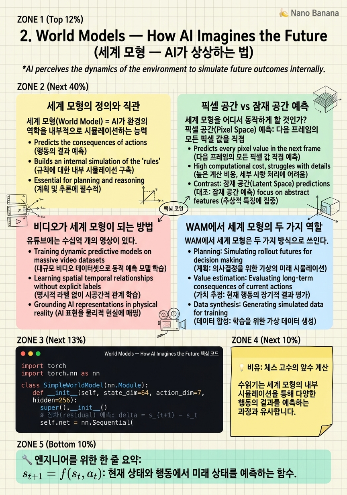

World Models — How AI Imagines the Future

🎯 학습 목표
- 세계 모형의 수학적 정의를 설명할 수 있다
- 예측 기반 학습과 생성 기반 학습의 차이를 이해한다
- 잠재 공간(latent space)에서의 예측이 왜 효율적인지 설명한다
- 비디오 데이터가 물리 세계에 대한 암묵적 지식을 담는 이유를 이해한다
- 로봇 제어에 세계 모형이 어떻게 활용되는지 개요를 파악한다
세계 모형(World Model)은 AI가 "세상이 어떻게 돌아가는지"를 내면화한 것이다. 사람도 눈을 감고 공이 어디에 떨어질지 예측할 수 있다 — 이것이 머릿속 세계 모형이 작동하는 것이다. AI에게 같은 능력을 주면 어떨까?
세계 모형의 공식 정의는 간단하다: 현재 상태 \(s_t\)와 행동 \(a_t\)가 주어졌을 때 다음 상태 \(s_{t+1}\)을 예측하는 함수 \(f(s_t, a_t) \approx s_{t+1}\)이다. 강화학습에서 모델 기반(Model-Based RL) 방법들이 이를 활용해왔지만, 딥러닝 시대에는 이 개념이 훨씬 풍부해졌다.
이 챕터에서는 세계 모형의 직관에서 출발해, 픽셀 공간 vs 잠재 공간 예측의 차이, 비디오 데이터가 왜 강력한 세계 모형이 되는지, 그리고 WAM이 이 아이디어를 어떻게 로봇 제어에 연결하는지 설명한다.
핵심 내용
세계 모형의 정의와 직관
세계 모형(World Model) = AI가 환경의 역학을 내부적으로 시뮬레이션하는 능력. 물리 법칙, 인과 관계, 물체 간 상호작용을 암묵적으로 인코딩한다.
수학적으로 표현하면:
\[s_{t+1} = f_\theta(s_t, a_t)\]
여기서 \(s_t\)는 시간 \(t\)의 상태, \(a_t\)는 행동, \(f_\theta\)는 학습된 전이 함수다. 이를 반복 적용하면 미래를 여러 스텝 앞까지 롤아웃할 수 있다.
직관적으로는 "머릿속 시뮬레이터"다. 체스 고수가 실제로 말을 움직이기 전에 수십 수를 머릿속으로 시뮬레이션하듯, 세계 모형이 있는 AI는 행동하기 전에 결과를 예측해볼 수 있다. 로봇이 컵을 잘못 집어 떨어뜨리기 전에, 모델 안에서 수백 번 시뮬레이션해 최적 경로를 찾는 것이다.
픽셀 공간 vs 잠재 공간 예측
세계 모형을 어디서 동작하게 할 것인가?
픽셀 공간(Pixel Space) 예측: 다음 프레임의 모든 픽셀 값을 직접 예측. 직관적이지만 계산 비용이 막대하다. 640×480 RGB 이미지는 921,600개 숫자다. 정확한 예측을 요구하면 모델은 배경 텍스처 같은 행동과 무관한 세부 정보까지 맞춰야 한다.
잠재 공간(Latent Space) 예측: 인코더로 이미지를 압축된 임베딩 \(z_t\)로 변환한 뒤 그 공간에서 다음 상태 \(z_{t+1}\)을 예측. LeCun의 I-JEPA/V-JEPA가 이 방식이다. 행동과 관련된 추상적 구조를 학습하고 불필요한 픽셀 변화는 무시한다.
| 구분 | 픽셀 공간 | 잠재 공간 |
|---|---|---|
| 예측 대상 | 원시 픽셀 | 압축 임베딩 |
| 계산 비용 | 높음 | 낮음 |
| 불확실성 표현 | 블러(blur) 발생 | 다중 가설 표현 가능 |
WAM에서 중요한 것은 픽셀 생성 자체가 아니라, 비디오 모델이 세상의 역학을 이해한다는 것이다.
비디오가 세계 모형이 되는 방법
유튜브에는 수십억 개의 영상이 있다. 그 영상들에서 AI가 배울 수 있는 것은 단순한 "다음 프레임 예측"이 아니다. 요리 영상에는 "기름이 뜨거우면 재료를 넣으면 소리가 난다"는 물리 법칙이, 공장 영상에는 "기계가 이렇게 움직이면 부품이 결합된다"는 인과 관계가 담겨 있다.
더 중요한 것은 인간 행동의 의도가 담겨 있다는 점이다. 손이 컵을 향해 뻗어가는 영상은 "집기"라는 의도를, 문을 향해 걷는 영상은 "이동"이라는 의도를 암묵적으로 인코딩한다. 대규모 비디오 사전학습을 마친 모델은 이런 언어-시각적 변화 매핑을 이미 내면화한 상태다.
WAM의 핵심 가설이 여기서 나온다: 비디오 모델을 백본으로 쓰면, 로봇이 새로 배워야 할 것은 "세상이 어떻게 돌아가는지"가 아니라 "로봇 팔로 그것을 실행하는 법"뿐이다.
WAM에서 세계 모형의 두 가지 역할
WAM에서 세계 모형은 두 가지 방식으로 쓰인다.
추론 시 사용(Inference-time use): 모델이 행동하기 전에 가능한 미래를 시뮬레이션한다. "컵을 집었을 때 어떤 프레임이 나올지"를 상상하고, 그 상상된 미래에서 행동을 역산하거나 계획을 검증한다. UniPi와 GR-1이 이 방식이다.
표현 학습으로만 사용(Representation-only): 비디오 모델로 장면을 인코딩만 하고, 추론 시에는 비디오 생성을 스킵한다. Fast-WAM이 이 전략을 쓴다. 속도를 3~4배 높이는 대신 세계 모형의 "상상" 능력을 포기한다.
두 전략 사이의 트레이드오프:
\[\text{세계 모형 활용도} \uparrow \implies \text{계획 품질} \uparrow,\ \text{추론 속도} \downarrow\]
현재 연구자들이 씨름하는 핵심 문제 중 하나가 이 트레이드오프의 최적화다.
💡 비유로 이해하기
그랜드마스터가 체스를 두는 방식을 생각해보자. 초보자는 말을 직접 움직여보고 "아, 이건 안 되네"를 실시간으로 배운다. 그랜드마스터는 머릿속에서 수십 수를 미리 시뮬레이션한다. 실제로 말을 만지기 전에 이미 5수 뒤의 판을 본다.
이 머릿속 시뮬레이션이 세계 모형이다. 그랜드마스터의 세계 모형은 "나이트가 이동하면 이 칸이 위험해진다", "룩이 열린 파일을 통제하면 압박이 강해진다"는 체스의 역학을 내면화하고 있다. 수년간 수십만 판을 관찰하고 플레이하면서 형성됐다.
WAM의 비디오 사전학습도 같은 원리다. 수십억 개의 비디오를 본 모델은 "병이 기울면 내용물이 쏟아진다", "로봇 팔이 천천히 내려오면 물체가 눌린다"는 물리 역학을 내면화한다. 이 세계 모형이 있으면 실제 로봇을 수천 번 시도하지 않고도 좋은 행동 계획을 세울 수 있다.
💻 코드 예시
단순한 세계 모형을 만들어보자. 현재 상태와 행동이 주어졌을 때 미래 상태를 예측하고, 여러 스텝을 롤아웃하는 구조다.
import torch
import torch.nn as nn
class SimpleWorldModel(nn.Module):
def __init__(self, state_dim=64, action_dim=7, hidden=256):
super().__init__()
# 잔차(residual) 예측: delta = s_{t+1} - s_t
self.net = nn.Sequential(
nn.Linear(state_dim + action_dim, hidden),
nn.SiLU(),
nn.Linear(hidden, hidden),
nn.SiLU(),
nn.Linear(hidden, state_dim)
)
def forward(self, state, action):
"""Returns predicted next state"""
x = torch.cat([state, action], dim=-1)
delta = self.net(x)
return state + delta # s_{t+1} = s_t + delta
def rollout(model, initial_state, action_sequence):
"""행동 시퀀스를 미리 실행해 미래 상태들을 예측."""
states = [initial_state]
s = initial_state
with torch.no_grad():
for a in action_sequence:
s = model(s, a)
states.append(s)
return states
# 10 스텝 미래 롤아웃
model = SimpleWorldModel()
s0 = torch.randn(1, 64)
actions = [torch.randn(1, 7) for _ in range(10)]
future = rollout(model, s0, actions)
print(f'롤아웃 완료: {len(future)}개 미래 상태 예측')SimpleWorldModel은 (state, action) 쌍을 입력받아 다음 상태의 잔차(delta)를 예측한다. 잔차를 쓰는 이유는 상태가 천천히 변하기 때문에 학습이 안정적이기 때문이다. rollout()은 행동 시퀀스 전체를 미리 실행해 미래 상태 궤적을 반환한다. 실제 WAM에서는 이 "상태"가 비디오 프레임의 잠재 벡터이고, 세계 모형이 확산 과정으로 구현된다.
🏭 현업에서의 평가
✅ 시니어가 보는 것
- 잠재 공간 vs 픽셀 공간 세계 모형의 트레이드오프를 명확히 설명할 수 있는가
- 컴파운딩 에러(compound error) 문제를 알고 있는가
- 비디오 사전학습이 왜 그라운딩 갭을 줄인다는 가설의 근거가 되는지 설명할 수 있는가
⚠️ 레드 플래그
- 세계 모형을 단순히 "미래 예측"으로만 설명하고 잠재 공간 관점을 언급하지 않는 것
- 컴파운딩 에러를 모르는 것 — 장기 롤아웃에서 오차가 지수적으로 누적됨
🎤 예상 인터뷰 질문
- 잠재 공간에서의 세계 모형이 픽셀 공간보다 유리한 이유는 무엇인가요?
- 세계 모형 기반 계획에서 컴파운딩 에러를 어떻게 완화할 수 있나요?
- 비디오 모델이 로봇 세계 모형으로서 갖는 한계는 무엇인가요?
✨ 핵심 요약
세계 모형 = 머릿속 시뮬레이터
$s_{t+1} = f(s_t, a_t)$: 현재 상태와 행동에서 미래 상태를 예측하는 함수.
잠재 공간이 낫다
픽셀 수준 예측은 비효율적. 압축된 임베딩 공간에서 예측하면 핵심 역학만 학습한다.
비디오 = 암묵적 물리 지식
대규모 비디오 데이터에는 물리 법칙과 인간 의도가 암묵적으로 인코딩되어 있다.
두 가지 사용 방식
추론 시 실제로 상상(시뮬레이션)하거나, 표현 학습에만 쓰고 추론 시 생략하거나.
컴파운딩 에러 주의
장기 롤아웃에서 예측 오차가 누적되므로 짧은 호라이즌 + 재계획 전략이 실용적이다.